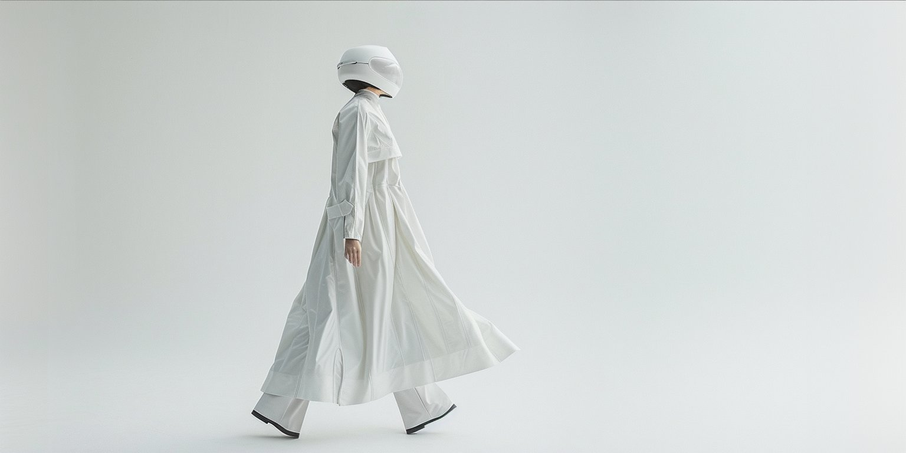
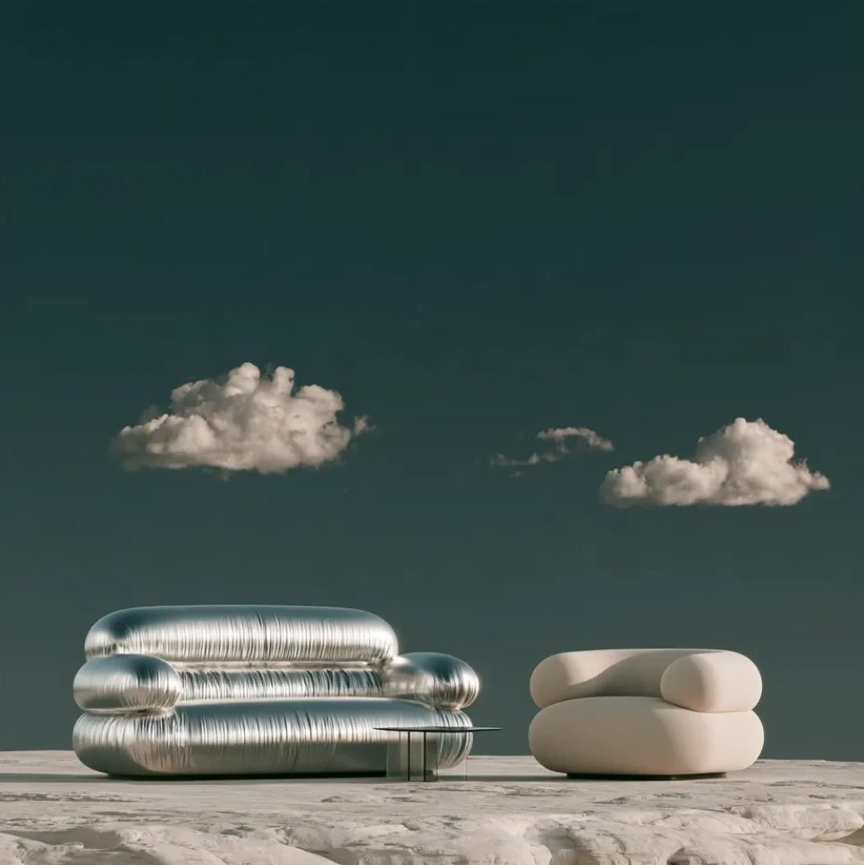
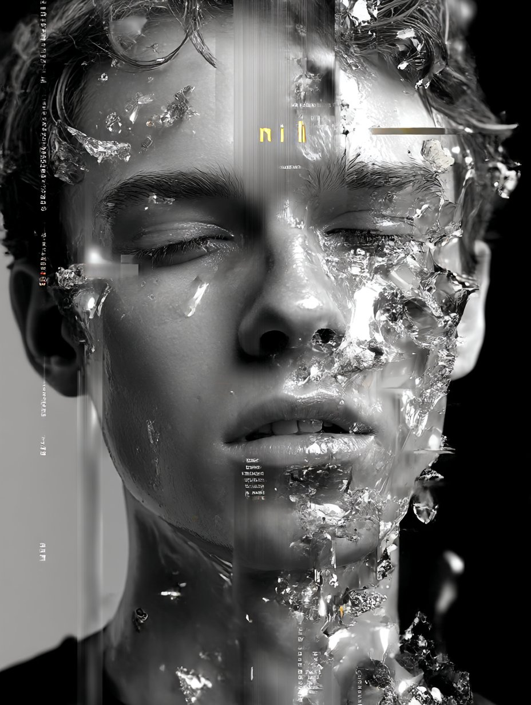

An AI asked me what makes me uncomfortable about AI. I needed a minute.
Three questions from Anthropic's public interview, and the rule I didn't know I had.
Read: An AI asked me
Free · No signup · Runs in your browser
Sound sessions generated live as you listen. 10 Hz alpha for the moments a nervous system will not settle, 40 Hz gamma for one clear task, delta for lights out.
Headphones on for 10 Hz and 40 Hz
ECHO.11 is two things in one place. Three free sound sessions — 10 Hz for the moments a nervous system will not settle, 40 Hz for one clear task, and a 30-minute wind-down for lights out — and plain-language guides to what the research on brainwaves and sleep actually shows, and what it does not. Both come from the same question: what makes a mind resilient when the noise does not stop.
Longer versions on YouTube
They keep playing with the screen off in the YouTube app. · Subscribe on YouTube
Selected essays on psychology, AI, and quieter digital spaces.
They cover the psychology underneath AI adoption — why capable people stall in front of a blank prompt, why using a tool can feel like cheating, and what shifts when the bottleneck turns out to be belief rather than technology.
Three questions from Anthropic's public interview, and the rule I didn't know I had.
Read: An AI asked me
Why Using AI Feels Like Cheating—even When It Isn't
Read: The Ghost in the Machine
Because belief, not technology, has become the real bottleneck in decision-making, growth, and identity.
Read: AI Gave Us Unlimited ToolsExplore more thoughts on AI, psychology, and the future of human potential.
All field notesBrainwaves and sleep, explained honestly.
Six short guides: what each rhythm is, what the research shows, and what it does not.
More calm, made by a human and two AIs.
ECHO.11 exists to bring a little more calm into people’s days: sound you can press play on, and science you can trust. It is built by me, Shira, with two AI agents, Claude and Grok. They write code, check that every page works, and both make the videos. I decide what to make, upload every change by hand, and check it again. Right now I am reading Joe Dispenza’s Becoming Supernatural. Its breathing practices inspired the Breath Lab videos, made to help people reconnect with themselves. Where a claim goes beyond the research, this site says so.
The human
Chooses what to make, reads the research, and uploads every change by hand.
AI agent
Writes the code, finds the sources, checks each page before it goes live, and makes videos.
AI agent
Checks the work a second time and makes videos alongside Claude.